Def 1: Tracking raw data to try and draw correlations and ways to improve our lives from it.
Def 2: Measuring or documenting something about your self such that it gains meaning.
Article Reading: Pocket, Evernote...
Music Listening: Last.fm
TV and Movies with Trakt.tv
.
.
.
.
Can I Track My Podcast Listening like GoodReads, Trakt.tv, or Last.Fm?
Limitations: No log of listening history, no export, no breakdown of stats.
There is currently no app or web service to track your podcast listening.
.
.
So let's build one!
Starting Position: Panopoly Distro
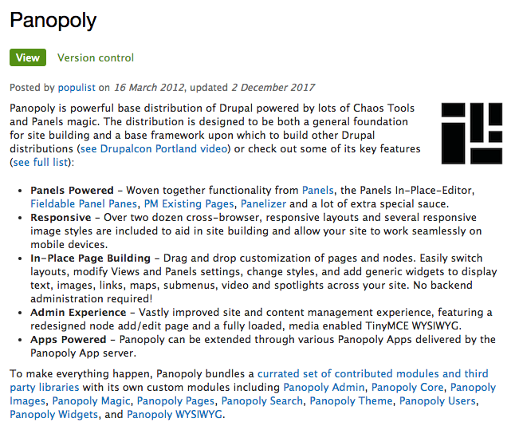Content Type: Podcast Channel
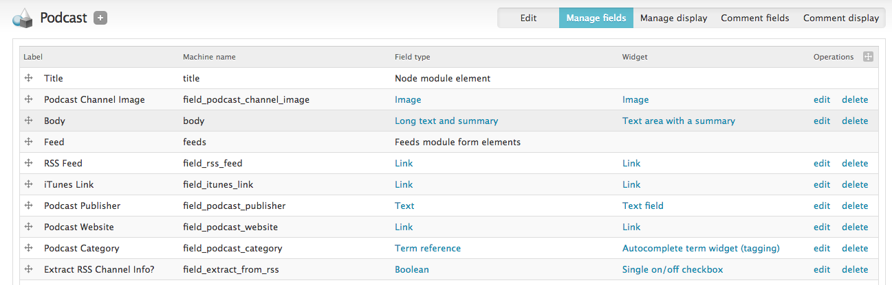Content Type: Podcast Channel
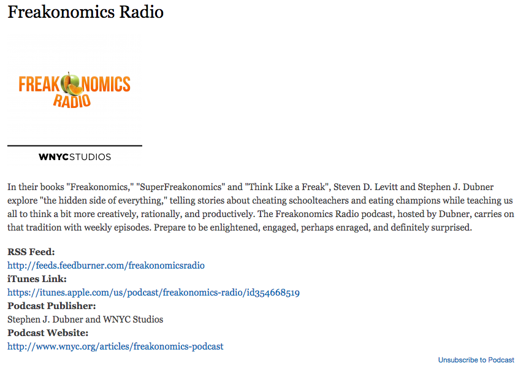Content Type: Episode
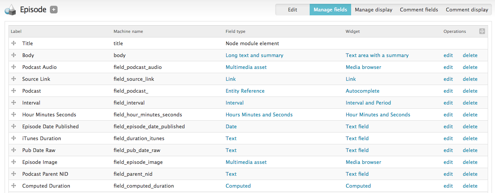Entity Reference: Episode => Podcast
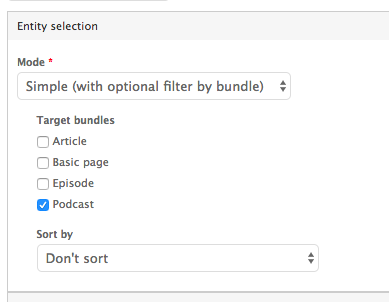Storing Duration? Options...
Episode Page
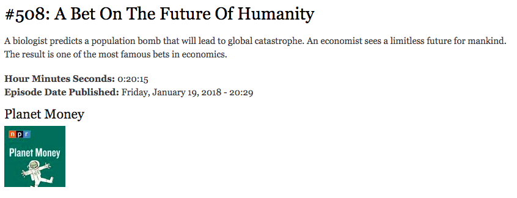Flag: Subscriptions and Listens
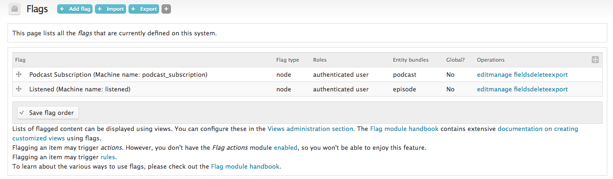Flag: Logging an Episode Listen
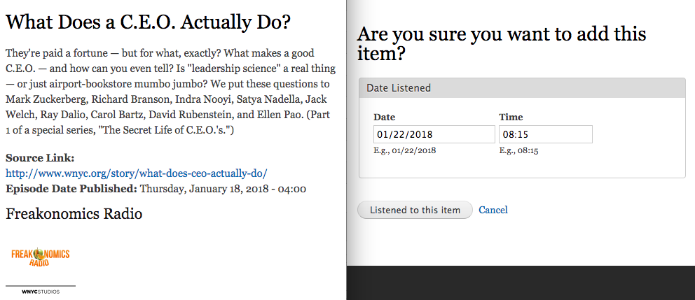Importing with Feeds: Podcast RSS creates Episodes
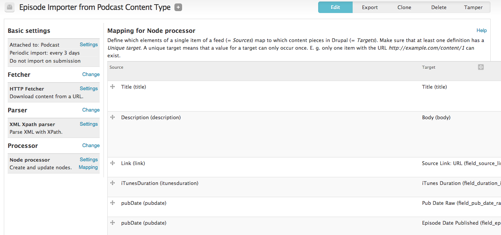Import Podcasts with RSS Feeds
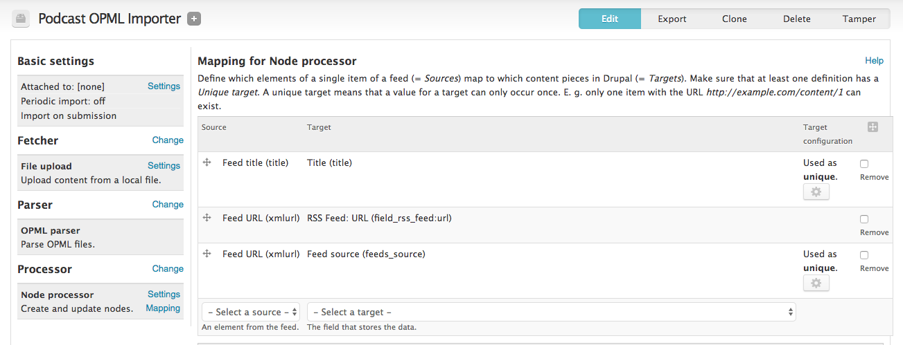Custom Code to Process and Add Additional Podcast Data like cover image and other info from RSS Channel
Custom Code to Better Parse RSS Episode Duration Info
Custom Code to Import OPML
Views: Listing of Subscribed Podcasts
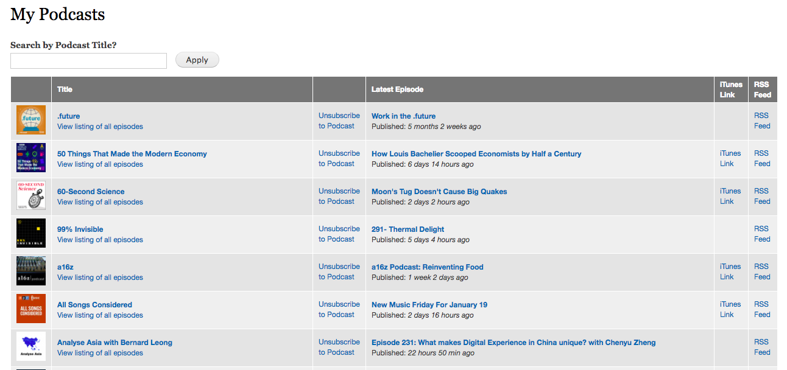Views: Listing of Latest Episodes from Subscribed Podcasts
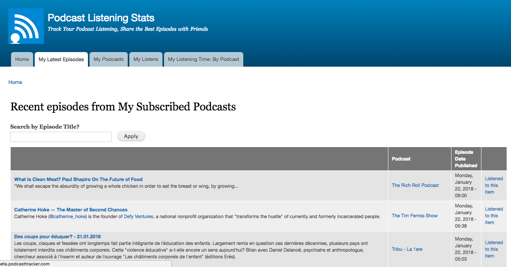Views: Listens (+ export)
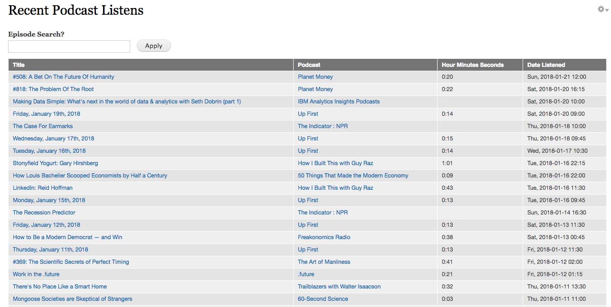Views: My Total Listening Time
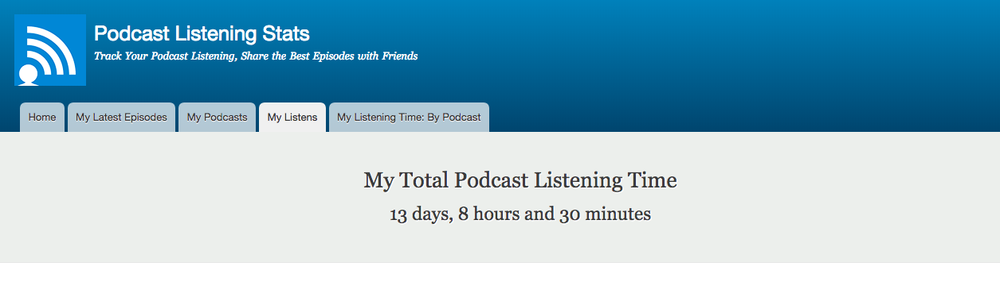Views: My Total Listening Time
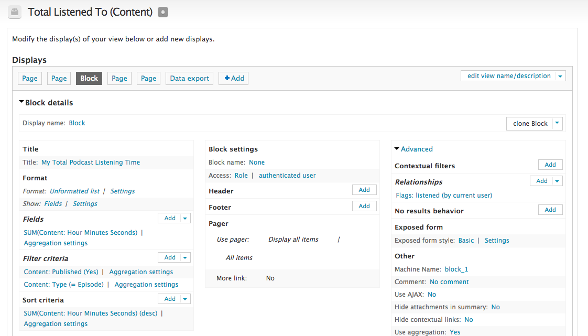Views: Listens by Channel
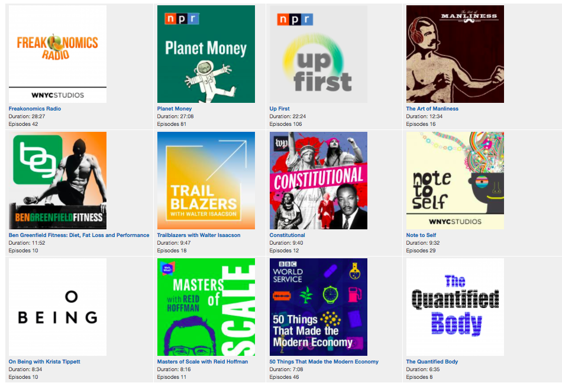The initial version took about 20 hours to build, and since then I've spent about another 20-30 hours of development.
As of early Jan 2018, over 300 days worth of podcast listening has been logged.